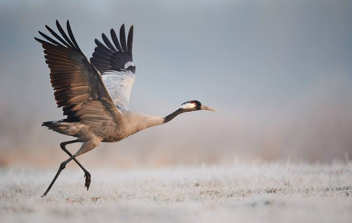

Oiseaux
migrateurs
de la Garonne


⟹ Faune Sauvage Emblématique ⟸
Depuis des siècles, la vallée de la Garonne sert de repère et de couloir de vol à des centaines de milliers d'oiseaux migrateurs, reliant les zones de nidification du nord de l'Europe aux quartiers d'hiver de la péninsule Ibérique et d'Afrique.

Le passage automnal des grues cendrées, visible et surtout audible depuis le sol dès la fin octobre, est observé et consigné par les naturalistes locaux depuis les années 1970-1980, dans le cadre d'un suivi coordonné à l'échelle nationale par la LPO.
La dégradation puis la restauration progressive des berges et des zones humides riveraines, engagées depuis les années 1990, ont permis le retour ou le maintien de plusieurs espèces nicheuses ou hivernantes le long du fleuve, comme l'hirondelle de rivage ou le grand cormoran.
Aujourd'hui, l'axe garonnais constitue l'un des principaux corridors ornithologiques suivis en Haute-Garonne, avec des dénombrements réguliers organisés à l'occasion des grands passages de printemps et d'automne.
Le fleuve et sa ripisylve offrent aux oiseaux migrateurs à la fois un axe de navigation visuel facilement suivi depuis les airs, et des haltes alimentaires précieuses pour reconstituer leurs réserves d'énergie avant de franchir les Pyrénées.
Les bancs de graviers, les îlots végétalisés et les zones humides riveraines jouent un rôle de garde-manger et de reposoir pour de nombreuses espèces, qu'elles ne fassent qu'une brève halte ou qu'elles y passent tout l'hiver.
Ce couloir garonnais s'inscrit dans un réseau plus large de voies de migration ouest-européennes, reliant les zones de nidification scandinaves et d'Europe du Nord aux zones d'hivernage ibériques et nord-africaines.
Artificialisation des berges : l'enrochement et la stabilisation des rives réduisent les sites de nidification naturels comme les berges sableuses des hirondelles de rivage.
Pollution lumineuse : l'éclairage urbain croissant le long du fleuve peut désorienter les oiseaux migrant de nuit, notamment lors de conditions météo dégradées.
Dérangement lors des haltes : la fréquentation intensive de certains bancs de gravier et berges peut empêcher les oiseaux de se reposer et de se nourrir suffisamment.
Aménagements hydrauliques : les ouvrages sur le fleuve modifient la dynamique des bancs de sédiments essentiels aux haltes migratoires.
Nul besoin de s'éloigner beaucoup de l'agglomération toulousaine pour suivre le grand passage : le fleuve traverse la ville elle-même.
La confluence Garonne-Ariège constitue un site de rassemblement reconnu pour de nombreuses espèces en halte migratoire.
Les îles du Grand Ramier, à Toulouse offrent un accès facile à des berges naturelles où observer hérons, cormorans et limicoles.
Fin octobre et début novembre restent les meilleures périodes pour espérer entendre, voire apercevoir, le passage des grues cendrées au-dessus du fleuve.